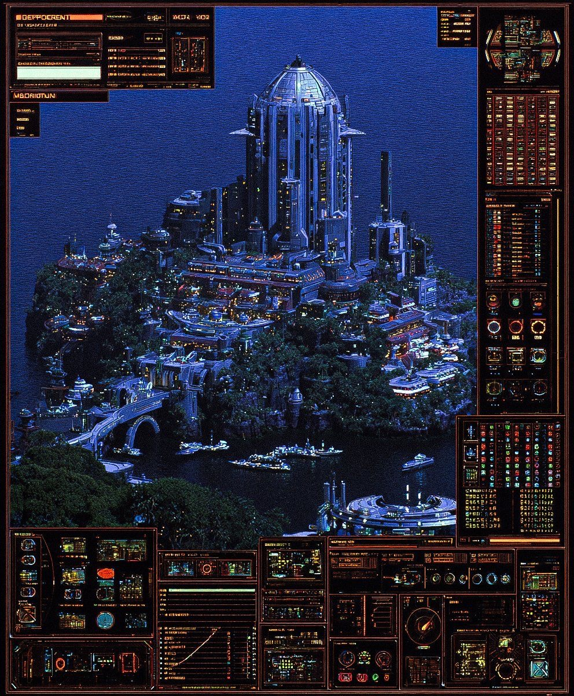

EXHIBITION / SPACE
Progettazione di allestimenti, dispositivi spaziali, ambienti atmosferici e relazioni tra immagine, corpo e architettura.
BLUCINE è uno studio visivo indipendente che lavora tra immagine, spazio, identità, ambienti digitali e costruzione percettiva. Ogni progetto viene trattato come un sistema: non solo un output grafico, ma una relazione precisa tra atmosfera, funzione, linguaggio e presenza.

L’archivio raccoglie i territori operativi di BLUCINE. Non è una lista neutra di servizi, ma una mappa dei formati in cui lo studio lavora: identità, ambienti, sistemi digitali, allestimenti, direzione visiva e sviluppo progressivo dei progetti.
Progettazione di allestimenti, dispositivi spaziali, ambienti atmosferici e relazioni tra immagine, corpo e architettura.
Costruzione di identità visive, sistemi grafici, tono tipografico, impaginazione e coerenza tra supporti diversi.
Siti, ambienti online, interfacce narrative e pagine-esperienza costruite con forte controllo visivo e strutturale.
Ricerca, moodboard, test, bozzetti, archivi di riferimento e sviluppo progressivo di una direzione visiva leggibile.
AWARD MODULAR BIOS V6.00PG [00] STANDARD CMOS FEATURES [01] ADVANCED BIOS FEATURES [02] SIGNAL TEST [03] VISUAL MEMORY BANK [04] ARCHIVE TRACE [05] PROCESS STACK [06] EXIT > SELECTED: [04] ARCHIVE TRACE > STATUS: SIGNAL PRESENT > TRACE.LOG LOADED
@@@@@@@@@@@@@@@@@@@@@@@@@@@@ @@@@@@ SIGNAL READY @@@@@@@ @@@@@@ TRACE ONLINE @@@@@@@ @@@@@@@@@@@@@@@@@@@@@@@@@@@@
BANK 1 Il laboratorio è il luogo in cui BLUCINE sviluppa riferimenti, confronta linguaggi, accumula segnali e costruisce direzioni. È la parte meno rifinita ma più strategica del sistema.
BANK 2 Qui entrano immagini trovate, errori utili, frammenti, test, atmosfere, materiali, interfacce e strutture in fase di definizione. La ricerca serve a chiarire il tono, ridurre il rumore e orientare la forma finale.
Immagini campione integrate come banca visiva. Tap o click per aprire.
Wii channel menu / playful digital experiments
← → per muoverti. Spazio per saltare. Raccogli tutte le monete.
Clicca l’ingrediente più volte possibile entro il tempo.
Clicca l’ingrediente per cucinare.
Lo studio è il luogo in cui i progetti vengono ordinati. Qui BLUCINE definisce struttura, gerarchia, margini, ritmo, materiali e coerenza tra gli elementi.
Ogni progetto deve avere un clima leggibile: non solo colori, ma temperatura, densità e presenza.
La qualità non nasce dall’accumulo. Nasce dalla capacità di togliere ciò che indebolisce.
Ogni sistema visivo deve avere un asse: un centro di gravità, una voce e una priorità.
Il progetto deve restare riconoscibile passando da stampa a spazio, da web a immagine, da interfaccia a racconto.
BLUCINE considera l’immagine come una struttura di orientamento. La forma non serve a decorare, ma a rendere leggibile una posizione, una relazione, un tono.
Lo studio lavora su progetti in cui identità, spazio, immagine e interfaccia non vengono trattati come campi separati, ma come parti dello stesso ecosistema visivo.
L’obiettivo non è produrre semplicemente elementi belli, ma costruire presenza, ritmo, chiarezza e memoria.
BLUCINE lavora meglio quando il progetto richiede una direzione visiva chiara, una forte identità percettiva o una costruzione coerente tra più linguaggi.
È il contesto giusto per identità visive, siti e ambienti digitali, allestimenti, progetti culturali, editoriali o sistemi visivi ibridi.
Quando scrivi, indica obiettivo, contesto, materiali già esistenti e tempistiche.
blucinelab@gmail.com